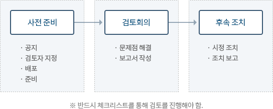

요구사항 검증
리뷰(인스펙션, 동료검토)
-
Formal Review
- 하나의 문서는 여러 형태로 리뷰 될 수 있음.
- 만약 한가지 이상의 리뷰 방식이 사용된다면, 리뷰 순서는 매우 다양해 질 수 있음.
- 예를 들어 비공식적인 리뷰(informal review)를 기술적 리뷰(technical review)에 앞서 수행 할 수 있음.
- 요구사항 명세에 대하여 수행되는 검사(Inspection)는 고객과 함께하는 walkthrough 전에 수행될 수 있음.
수행절차 - 1단계 : 계획(Planning)
- 리뷰 조건 정리
- 인원 선택
- 역할 할당
- 좀 더 형식적인 리뷰(e.g. 점검)를 위해 시작과 종료조건(entry and exit criteria) 정의.
- 리뷰 할 문서의 부분 선택.
- 시작 조건 확인. (매우 공식적인 리뷰)
- 2단계 : 킥오프(Kick-Off)
- 문서배포
- 참가자들에게 리뷰 목적, 프로세스, 문서들에 대해 설명
- 좀 더 형식을 필요로 하는 리뷰들을 위해서 시작 조건을 확인.
- 3단계 : 개별 준비(individual preparation)
- 문서 리뷰로 리뷰 미팅 준비.
- 참가자 개개인들 스스로 리뷰 미팅 전에 잠재적인 결함, 질문과 Comment들을 기록.
- 4단계 : 리뷰 미팅(Review meeting)
- 토론하고 기록함 (보다 formal한 경우 상세 회의록 작성).
- 미팅 참석자들은 결함(defect)을 처리하기 위한 충고사항을 제시하거나 결함에 대한 결정을 하기 위하여
간단하게
결함을
기록 할 수
있다.
(단순한 결함체크 -> 결함 대처안 제안 -> 결함(처리)여부를 결정.)
- 5단계 : 재작업(Rework)
- 발견된 결함 수정(주로 작성자(Author) 수행).
- 결함의 업데이트 된 상태 기록(공식적인 리뷰).
- 6단계 : 추가 작업(Follow-up)
- 발견된 결함 처리되었는지 확인.
- 메트릭(측정치) 수집 & 확인(메트릭 : 측정에 쓰이는 측정 척도와 방법)
- 좀 더 형식적인 리뷰들을 위해 리뷰 종료 기준 확인.
역할/분담 - 관리자(Manager)
- 리뷰 실행을 결정.
- 프로젝트 일정 내에 리뷰 시간을 할당.
- 리뷰의 목표가 달성되었는가를 결정.
- 중재자(Moderator)
- 문서의 리뷰나 설정을 리드하는 사람.
- 리뷰 계획.
- 회의 진행.
- 회의 후 후속 작업 수행.
- 다양한 관점에 대해 중재.
- 리뷰의 성공여부가 달림.
- 작성자(Author)
- 리뷰되는 문서의 작성자나 최고 책임자.
- 리뷰어(Reviewer)
- 특정 기술 혹은 비즈니스 배경을 가지고 있는 개인
- Checker 또는 Inspector로 불려짐.
- 필요한 준비 후에 리뷰 동안에 제춤에서 발견된 사항(e.g 결함)을 정의하고 묘사하는 사람.
- 리뷰 프로세스에서 다양한 관점과 역할을 대표하도록 선정.
- 모든 리뷰 미팅에 참가.
- 필기자(또는 서기)(Scribe(or recorder))
- 모든 이슈사항, 문제 그리고 미팅 동안에 정의된 문제점(- 미정사항 open points)을 문서화.
-
Informal Review
- 주요 특성
- 공식적인 프로세스가 없음.
- 2인 1조(Pair programming)에 의한 리뷰 또는 기술 리더가 설계와 코드를 리뷰하는 형태
- 선택적으로 문서화 될 수 있음.
- 리뷰하는 사람에 따라 유용성이 달라짐.
- 주요 목적
- 저렴한 비용으로 일정 성과 달성
- 주요 특성
-
Technical Review
정의 문서에 존재하는 기술적인 부분에 대해 기술적 문제가 있는지를 확인하는 리뷰로서 기술전문가 및 아키텍트 위주로 진행. 특징/목적 주요 특징
- 동료와 기술 전문가가 참여, 결함 발견을 위한 문서화되고 전의된 절차가 존재함.
- 훈련된 중재자(작성자가 아닌) 또는 기술전문가가 주도.
- 관리적 개입 없이 동료검토를 통해 수행 할 수 있음.
- 리뷰어는 회의 전 사전 준비(pre-meeting preparation) 필요.
- 때로 체크 리스트, 리뷰 리포트, 발견 사항의 리스트 및 경영층 참여 활용.
- 실무에서는 비공식적일수도, 공식적일수도 있음.
- 공식적인 경우 문서화 필요.
- (성공적으로 진행되는 경우) 리뷰어에 관계 없이 일관되고 정량적인 효과 도출 가능.
주요 목적
- 논의, 의사 결정, 대안 사항의 평가, 결함(defect)의 발견.
- 기술적인 문제 해결, 명세서 또는 표준과의 적합성 확인.
-
Walkthrough
정의 소프트웨어 개발 멤버가 집단 토의에 따라 설계문서나 프로그램 중의 논리적인 오류를 발견하는 방식. 특징/목적 주요 특징
- 작성자에 의해 주도되는 미팅.
- 시나리오 사용, 리허설(dry runs), 동료 그룹 검토의 형태.
- 시간 및 인원수 등에 제한이 없고 상황에 따라 변경 할 수 있는(Open-ended) 세션.
- (선택적)리뷰어가 사전 회의 준비(pre-meeting preparation), 발견한 결함들에 대한 목록을 포함한 보고서 준비.
- 서기가 있을 수 있음(작성자 아님).
- 실무에서는 비공식적일 수 있고 반대로 공식적일 수 있음.
- 요구사항 명세서와 같은 상위 수준의 문서에 유용함.
주요 목적
- 학습, 시스템에 대한 이해 향상, 결함 발견.
-
Inspection
정의 항목(entry)과 종료 특성(exit criteria)을 가진 규칙(rules)과 체크 리스트(checklists)에 기반한 가장 공식적인 리뷰 기법이며 항상 문서화된 절차에 기반하여 수행. 특징/목적 주요 특징
- 훈련된 중재자(moderator)에 의하여 주도(작성자 아님).
- 주로 동료검사
- 역할이 정의되어 있음.
- 메트릭 수집 및 활용.
- 회의 전 사전 준비(pre-meeting preparation)
- 검사 보고서(Inspection report), 발견사항 리스트(list of findings) 산출
- 공식적인 후속처리 확인(Follow-up)프로세스 존재.
- 프로세스 향상과 reader 필요(선택적)
- 리뷰어와는 별도로 테스터의 역할을 둠.
주요 목적
- 에러 예방, 비용 절감, 팀간 커뮤니케이션 향상
-
동료 검토(Peer Review)
정의 개발 동료들이 검출된 결함의 개선을 위해 정의된 순서를 따르는 소프트웨어 작업 산출물을 검토하는 작업.
개발자가 자신의 동료들이 완료한 작업을 검토하는것.
수행절차 -
공지와 배포
- 산출물 작성자
- 자신의 산출물이 리뷰할 준비가 되었음을 검토자에게 통지
(예를 들어 프로젝트 계획서, 요구 분석, 사용자 인터페이트 프로토타입, 설계, 코드, 혹은 테스터 사계 등) - 공식 절차를 거쳐 해당 자료를 진행자(Moderator)에게 전달.
- 자신의 산출물이 리뷰할 준비가 되었음을 검토자에게 통지
- 진행자
- 산출물을 검토 할 사람과 리뷰 회의에 참석할 사람을 결정.
- 검토를 위한 자료를 배포
- 산출물 작성자
-
준비
- 검토자는 이전에 가장 많이 발생했던 에러 체크리스트로 산출물을 검토.
- 검토 회의는 검토잗들이 산출물에 대한 검토를 마친 후 개최.
-
검토
- 산출물의 작성자, 진행자, 검토자들이 모여 산출물을 검토.
-
검토 보고서 작성
- 회의 후에 작성자와 진행자는 리뷰 회의의 결과 등을 기록으로 남김.
- 내용 : 검토한 자료의 양, 발견된 결함의 종류와 개수, 회의에 걸린 시간, 산출물이 검토에 통과하였는지 여부
-
후속 조치
- 작성자 및 기타 관련자는 수정 작업을 끝내고, 변경된 내용을 검토 한 후 해당 산출물이 공식적으로 검토 되었음을 선언.

-
공지와 배포